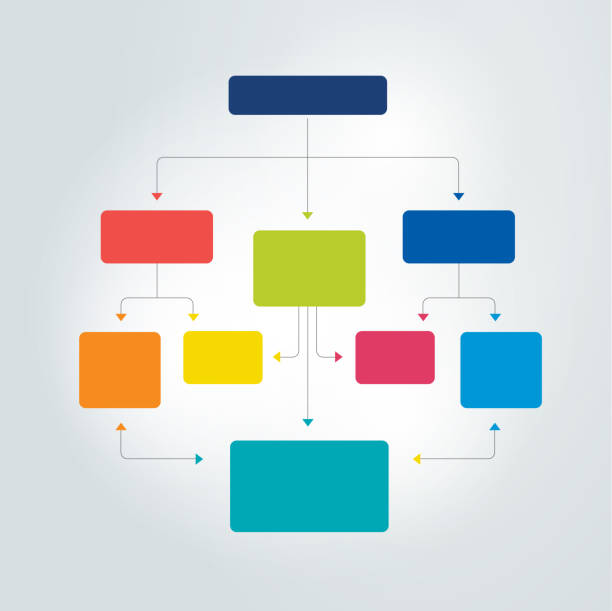
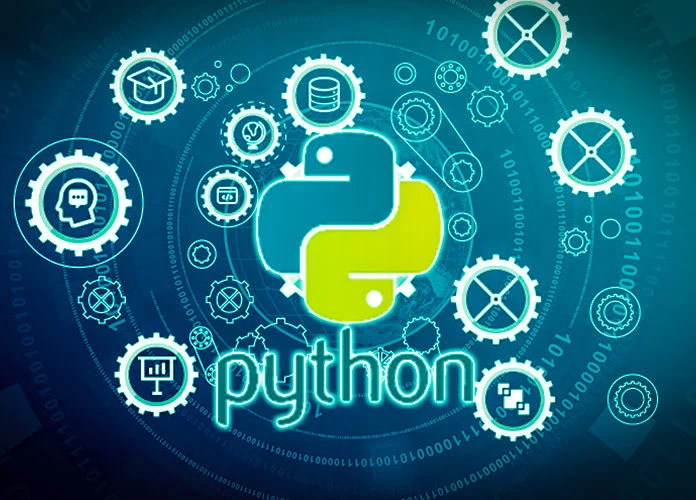

Pseudocode
Pseudocode is the representation of step by step process in a high level way. There are 5 basic elements of Pseudocode. These are assigned operator, Variable, Read Operation, Print Output to user, and lastly Read the Output from the user. Pseudocode is Important to programmers because it guide us programmers in our program and track us without getting bogged down in the details of the program. Also it maeks us easier to understand, communicate, and debug.
Flowchart
Flowchart in programming is the representation of process using tools or symbols. As we can see as the name itself "Flow" represents the flow of control in a program by showing the order of execution of statements and the conditions which certain statement are executed. There are 8 basic symbols of flowchart. These are the "Terminator", which represents the start and end of the process. The input/output, which serves as data entering or leaving. This is where operators represents the task. "Decision", this is where conditional statement takes action and it is only answerable by boolean or true/false. Off page connector is where the flow continous outside the page. "On-page Connector" is where the flow continous within the same page and Last is the "Flow Lines" these connect the symbols to indicate the flow of the process.

Introduction to Python
Python is a high level Programming Language which is use in Web Development, Software Developmen, Machine Learning, Data Science
, and Game Softwares. The creator of Python is Van Guido Rossum, and he said that the name "Python" came from the series "Monty Python's Flying Circus" In Python it uses Indentation to determine the block of code, Unlike other programming languages they're using curly braces "{ }" for dertermining block of code
Python use # Symbol for creating a Comment and ''' ''' for a multi comment. In naming identifier in Python we should avoid uppercase in the first letter of variable because Python is a Case sensitive. Instead use Camel Casing or using an UnderScore "__" for example:
first_name_of_regular_student. We should use proper naming to avoid confusion to the other developers and also for us. In Python there are 5 Data types. 1st is the Numbers which represents Float which are decimals and Integers which are whole numbers.
2nd is the string these are the characters inside a quotation mark. Also the default data type in python is a string so when were gonna use a integer or float we must put before first the data type
so that there will be no error. 3rd is the List, List is used to store a ordered collection of elements and uses brackets []. and also in arrays the index or the number of order in the array is
staring from 0. Example is: [apple, mango, grapes, banana]
the index of apple is 0, then the mango is 1, grapes is 2, banana is 4.
4th is set, it is used to store an unordered collection of elements. Lastly is the tuple, it is similar to list but it is immutable or its elements can't be modified once they're created.
Next is the Python Operators, these are special symbols that are used to perform operators on variables and values. Common types of operators are Arithmethic Operators(+ Addition, - Subtraction, * Multiplication, / Division, and % Modulo)
Comparison Operators (==, <, >, etc.) Logical Operator (and, or, not) Assignment Operator(=,+=, *=, etc). There are common types of function that are used in Python. The print() function this is used to display the output on the console. Another one is .format() function
it is used to insert values into strings. It allows us to insert placeholders by curly braces {} into a string. For Example are in my recent activities I uses .format()function.
Conditonal Statement
Conditional Statement allows us to perform a condition if the certain condition is true and will perform a specific block of code otherwise if false it will go directly and also perform a specific block of code.
there are 5 of conditional statements. The If Statement If a condition is true, it will perform specific statement that within the certain condition. Else statement
If the If statement is false it will go directly to Else and perform the block of code. If Else-If Else Statement the Elif statement is the condition that if the previous statement are false and you want to add another condition
It will go to Elif Statement. Nested If statement Nested If is an If statement that is inside another If statement. This allow you to check multiple conditions in a single block of code. We can use nested if as many as we need but let us be mindful because it can't perform if our Indentation is wrong. Short-Hand If Else Statement
the short hand if else statement are statement that if we want to add another statement within the same line by adding logical operators.
Looping Statement
Looping Statement is a concept that allows a block of code to be repeatedly executed with a specified number of times or while a certain condition is met. This is often used to iterate
through the elements of an array of collection, or to repeatedly perform a specific task until a certain condition met. In python there are 2 kinds of Looping Statements. 1st is the For Loop
A for loop in python is a loop that allow us to iterate through a sequence of elements such as list or range of numbers. This is the syntax for a for loop:
for variable in sequence:
# of code to be executed
then next is the while loop, In python a while loop allow us to repeteadly execute a block of code as long as it is true. This is the the syntax in while loop:
while condition
# of code to be executed
The Condition is a Boolean expression that is Evaluated before each iteration of the loop. Also the while loop is usefuk when the number of iteration is not know in advance or we want to keep iterating until a certain condition is met.
Reflection
Before I enter college I didn't have any knowledge in Programming because my dream course is Civil Engineering. They said that Computer Related Course or Technology Experts are the In Demand in today's generation. So I took Computer Science without hesitate. So a month before the opening of classes I gather some information on what are all about my course is. i started researching the basics, fundamentals and more, I also ask in some tips and advice in my friends which is the same course as me but they're seniors. I ask in which programming languages should I start to learn on. Some say that I should start on Complicated Programming Languages like C++ because the syntax are hard to understand and also that I can make it easier to understand all the other programming languages and some say that I should start from Python because the syntax are easier to understand thus most of the programmerrs start learning on Python before they go to other programming languages. Then I started learn Python from the basics. When the class starts I was relieved because the programming languages that we took is Python which is I have a little bit knowledge about it and I wouldn't get difficult in keeping up in this Subject. As time progressed, I will continue to learn more, to gain more, and to enjoy more on computer programming and Python, and am grateful for the opportunity to improve my skills in this field because of this subject.
After this Subject I really enjoyed Computer Programming 1 even it was taking half of it, despite the fact that I'm not very skilled at it yet. I found myself on looking forward to class and to start learning new things. I also appreciated the opportunity to work on programming projects and apply what I had learned. I realized that I have a passion for computer programming and technology and I am determined to improve my skills in this field. Despite how much I enjoyed the lesson, I did have some challenges, mainly with the concept of looping in Python, particularly with for loops. It was difficult for me to thoroughly grasp the notion and appropriately implement it in my code. But I was motivated to overcome this challenge and sought assistance from my peers and lecturers. I then spent more time practicing and researching the idea until I felt confident in it. In the long term, I feel that experiencing and overcoming problems like this would only make me a better programmer. I am excited to continue my education and see where this path takes me.

Compilation of activities
Files of activities *Click to View
-Activity No. 1
-Assignment No. 1
-Activity No. 2
-Midterm Laboratory Flowchart
-Midterm Laboratory Pseudocode
-Midterm Laboratory Screenshot
.jpeg){kind=link}
-Midterm Laboratory Pdf
-Activity No. 3
-Assignment No. 2
-Activity No. 4